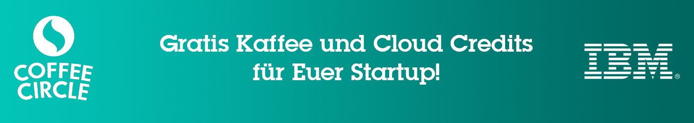

Teilnahmebedingungen:
- Bei Anmeldung zum IBM Global EntrepreneurProgramforCloud Startups der IBM erhält jedes neu registrierte Unternehmen einmalig ein Kaffeeabonnement der Firma Coffee Circle GmbH.
- Das Kaffeeabonnement umfasst drei (3) monatliche Lieferungen zu je 500g Yirga Santos Espresso. Der Versand des Kaffees erfolgt von der Firma Coffee Circle direkt an das jeweilige Unternehmen. Das Abonnement endet automatisch nach drei Monaten.
- Zu diesem Zweck übermittelt IBM die Empfängerdaten an die Firma Coffee Circle.
- Dieser Übermittlung der Daten kann das Unternehmen schriftlich per Mail an neuffer@de.ibm.com widersprechen. Damit entfält der Anspruch auf das dreimonatige Kaffeeabonnement für das Unternehmen.
- Teilnahmeberechtigt sind alle neuen Registrierungen im IBM Global EntrepreneurProgramforCloudStatups, die bis einschließlich 30.09.2015 eingegangen sind.
- Teilnahmeberechtigt sind Unternehmen mit Firmensitz in Deutschland, Österreich und der Schweiz.
- Zusätzlich verlost IBM unter allen bis 30.09.2015 eingehenden Registrierungen für das IBM Global EntrepreneurProgramforCloud Startups ein Upgrade der CloudCredits auf 120.000 US Dollar pro Jahr. Das Upgrade wird jeweils einmal im August sowie einmal im September ausgelost.
- Der Rechtsweg ist ausgeschlossen.